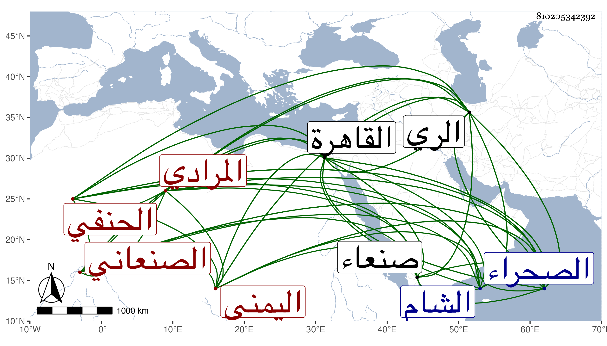

0902Sakhawi.DawLamic.ITO20230111-ara1.EIS1600.810205342392
Biography ID: 810205342392
1203
صالح بن قاسم بن أحمد بن أسعد بن محمد بن الفضل بن مياس المرادي اليمني الصنعاني الحنفي نزيل الصحراء ويعرف بالشيخ صالح . ولد في سنة ثلاث وثلاثين وثمانمائة بمخلاف صنعاء ، ونشأ بها فحفظ القرآن وغيره ، واشتغل هناك قليلا في الفقه والعربية وأصل الدين ثم ارتحل في سنة ثلاث وخمسين فحج وجاور ثم ركب البحر إلى القاهرة فدخلها في رمضان سنة خمس وخمسين فلازم التقى الشمني في الفقه والعربية وكان مما أخذه عنه حاشيته للمغني وشرحه للنقاية وكتبهما بخطه ، وكذا أخذ عن التقي الحصني المنطق والمعاني والبيان وأصول الدين وغيرها وعن الكافياجي أصول الفقه وسافر إلى الشام فأخذ بها عن حميد الدين في أصولهم وعن ملا شيخ شرحه لدرر البحار ، وتوجه لتبريز فقرأ على ملا ظهير الدين في المعاني والبيان وإلى الري فأخذ عن ملا عبد الرحيم الكندي بفتح الكاف نسبة لمدينة في الري ، ودام في غيبته خمس سنين ثم رجع إلى القاهرة وقطن الصحراء بها ، وحج رفيقا للابناسي وأقرأ الفضلاء ، وتميز في العربية والصرف والمنطق والمعاني والبيان ، وعرف بالصلاح والفصاحة مع تقلله وانجماعه وعدم مزاحمته لبني الدنيا بحيث عرض عليه النيابة في القضاء فأبى .
